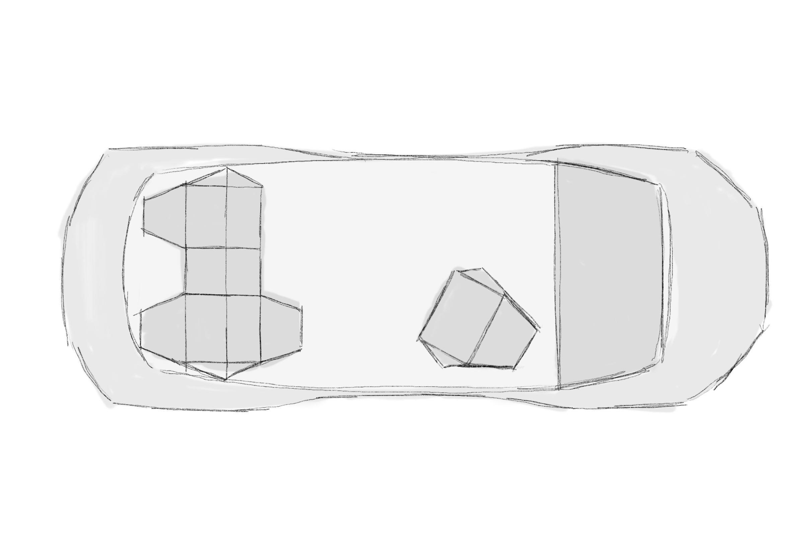
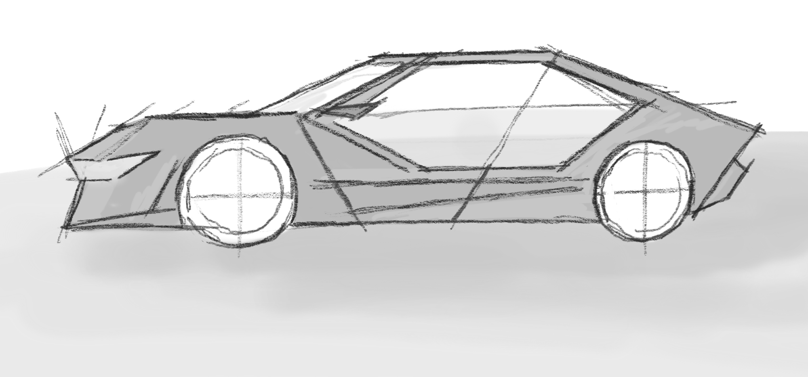
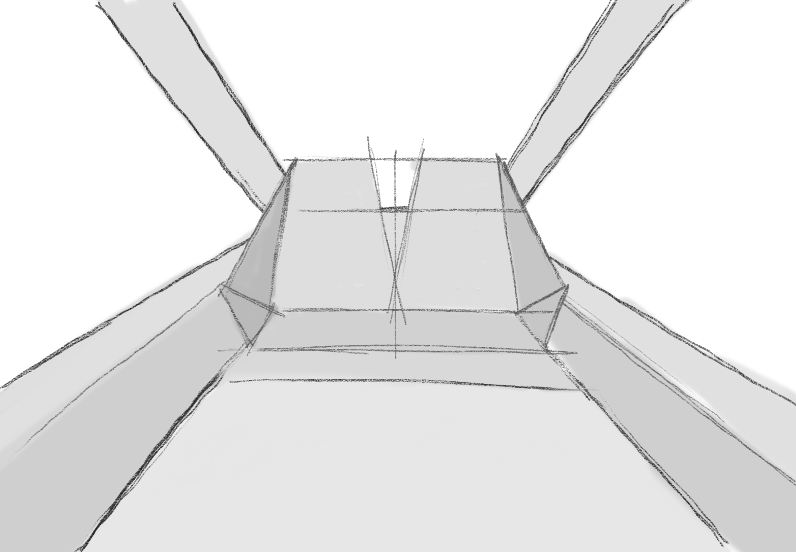
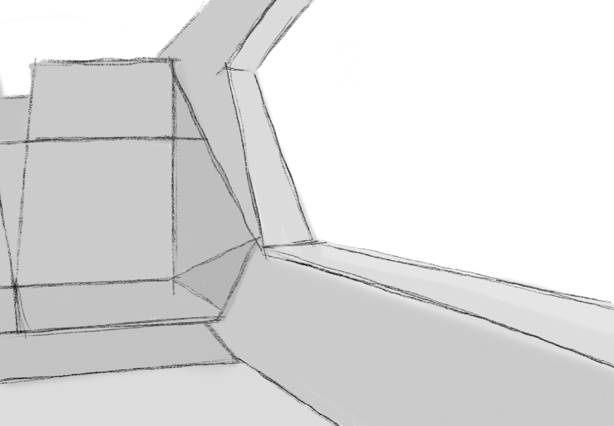
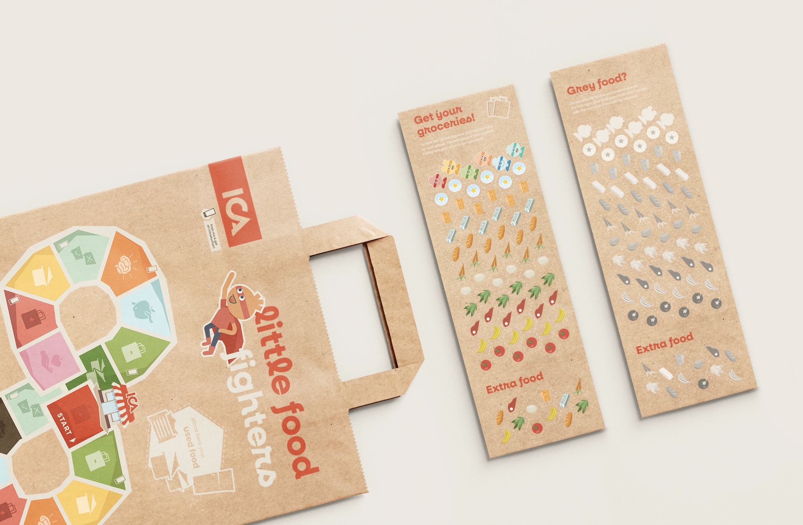
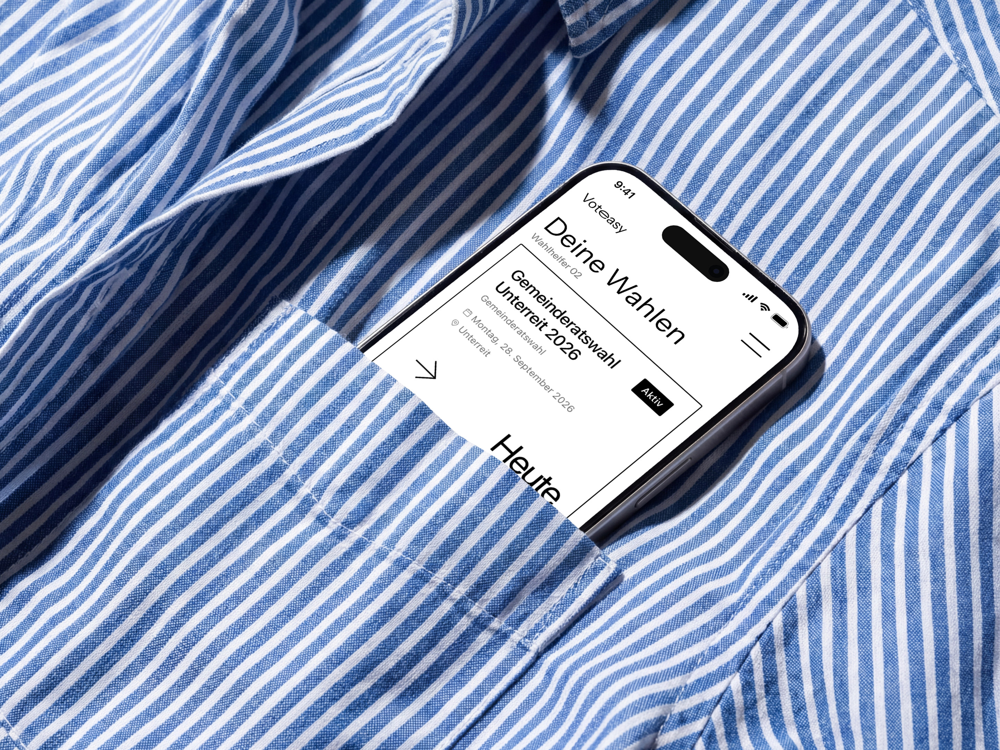
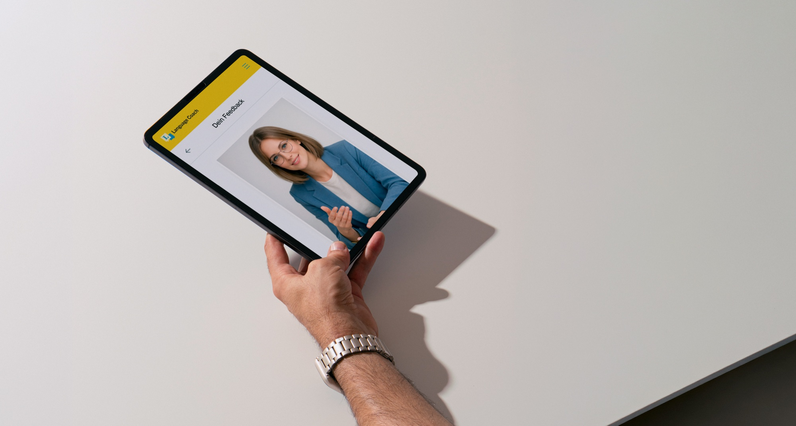

A thesis project for Audi AG exploring how personal smart devices can become the core of the Level 5 autonomous driving experience.
In a Level 5 autonomous future, the entire premise of in-car UX changes. How do we design interactions when driving is no longer the user's task, and how can a personal smart device enable a seamless travel experience that adapts to individual needs and societal shifts?

I started with research into autonomous vehicle technology, passenger behaviour, and emerging mobility trends. The research also considered broader societal shifts expected in that timeframe: changing work patterns, new living situations, and shared mobility. Scenario-based thinking defined the design space and its constraints.

Based on the research, I identified the key trends expected to shape everyday life at the time Level 5 autonomy becomes reality. The concept was then developed around these trends and the environmental conditions that come with them, designing for the situations passengers will actually find themselves in.

A holistic concept was developed around the three persona's everyday life with a range of travel situations. The design explores personalisation and multi-modal interaction patterns that make use of the entire physical space a Level 5 vehicle offers.

Key scenarios were prototyped through sketches and videos and presented to a mixed group of experts for evaluation. The focus group assessed how familiar device interactions could adapt to the autonomous travel context.
While details remain confidential, the concept places the personal smart device at the
heart of in-car experience. With autonomy removing manual control, the focus shifts to
personalisation, connectivity, and making travel time meaningful, built for a passenger,
not a driver.
The focus group responded positively to the concept. A key discussion point: the design was
closely tied to a specific persona, and expanding it to further user groups was identified as
a valuable next step. A strong starting point for continued exploration.

Little Food Fighters

Voteasy Votecounter

Langenscheidt Language Coach